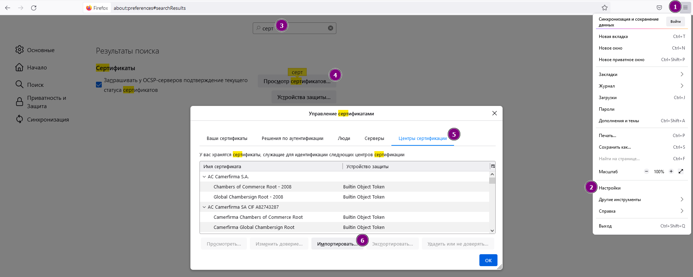

Лабораторная работа №3
Тема
Инфраструктура открытых ключей.
Цель работы
- Научиться создавать сертификаты.
- Исследовать применение сертификатов.
- Изучить вопросы безопасности.
Порядок выполнения работы
Создание сертификатов
-
Создайте приватный ключ удостоверяющего центра (УЦ или CA).
openssl genrsa -out имя файла ключа CA.key длина ключа # (1)длина ключа- не рекомендуется указывать менее 2048 бит.
-
Создайте самоподписанный сертификат удостоверяющего центра на основе созданного ключа.
openssl req -x509 -new -key <имя файла ключа CA>.key -days <кол-во дней действия сертификата> -out <имя файла сертификата CA>.crtПримечание
В процессе необходимо будет заполнить небольшую анкету, в которой нужно заполнить поля своими уникальными (в пределах своей группы) данными. Например, в поле Название организации можно написать номер группы, а в поле Org. Unit (OU) написать свою фамилию.
-
Создайте приватный ключ для веб-сайта.
openssl genrsa -out <имя файла ключа для веб-сайта>.key <длина ключа, рекомендуется не менее 2048>Примечание
В качестве названия ключа можно использовать доменное имя веб-сайта. Например, example.com.key.
-
Создайте запрос на подпись сертификата.
openssl req -new -key <файл с ключом веб-сервера>.key -out <файл с запросом>.csrВажно
При заполнении анкеты в поле Common Name нужно указать доменное имя веб-сайта. В качестве доменного имени сайта используйте фамилия.группа.
-
Подпишите сертификат ключом удостоверяющего центра.
openssl x509 -req -in <файл с запросом>.csr -CA <файл с сертификатом УЦ>.crt -CAkey <файл с ключом УЦ>.key -CAcreateserial –out <файл с сертификатом веб-сервера>.crt -days <кол-во дней для действия сертификата>
Настройка веб-сервера
Настройка приводится для Apache2. Можно также использовать другие варианты.
-
Запустите Apache.
sudo systemctl start apache2.serviceОткройте браузер и введите адрес сервера, где расположен Apache. Должно открыться стандартное окно приветствия Apache.
-
Скопируйте файл с настройками виртуального хоста.
sudo cp /etc/apache2/sites-available/default-ssl.conf /etc/apache2/sites-available/<фамилия>.<№ в группе>.conf -
Отредактируйте строки в полученном файле (или добавьте, если их нет).
ServerName <фамилия>.<№ в группе> # доменное имя сайта SSLCertificateFile <путь к сертификату> SSLCertificateKeyFile <путь к приватному ключу> -
Укажите дополнительные параметры работы Apache.
sudo a2enmod ssl sudo a2ensite <имя conf-файла с настройками> -
Перезагрузите Apache.
sudo systemctl restart apache2.serviceПримечание: если нет сообщений, то, скорее всего, все хорошо. Также можно вместо restart можно написать status*, чтобы проверить статус сервиса.
Дополнительные настройки и проверка
-
Отредактируйте файл /etc/hosts.
Укажите в нем локальный адрес и доменное имя веб-сайта, для которого создавался сертификат. В файле должны быть примеры создания такой записи.
Примечание
В Windows данный файл находится в C:\Windows\System32\drivers\etc\hosts.
-
Загрузите корневой сертификат (сертификат УЦ) в хранилище.
Сертификат можно загрузить в браузер Firefox или в хранилище операционной системы. Для первого раза лучше использовать первый вариант, чтобы в случае неправильных действий, последствия были менее разрушительными.
Импорт сертификата в Firefox
В браузере Mozilla Firefox открыть «Меню > Настройки > В поиске ввести «Сертификат» (или Cert в англ. версии) > Просмотр сертификатов > Импортировать > Указать файл сертификата (с расширением .crt)». При добавлении нужно поставить 2 галочки, указывающие на полное доверие ему.

После загрузки корневого сертификата бразуер будет доверять сертификату веб-сервера, т.к. ключ веб-срвера подписан ключом УЦ.
-
Откройте браузер и введите адрес веб-сайта https://<доменное имя веб-сайта>. Проверьте, что в сертификате присутствуют указанные при создании параметры.